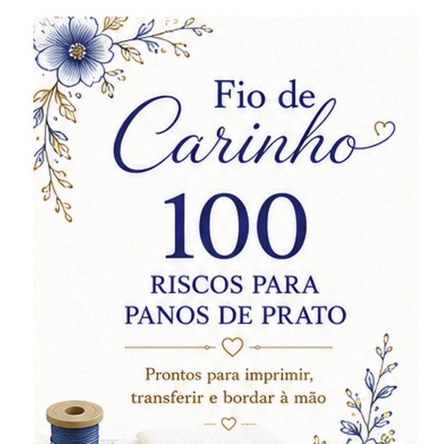
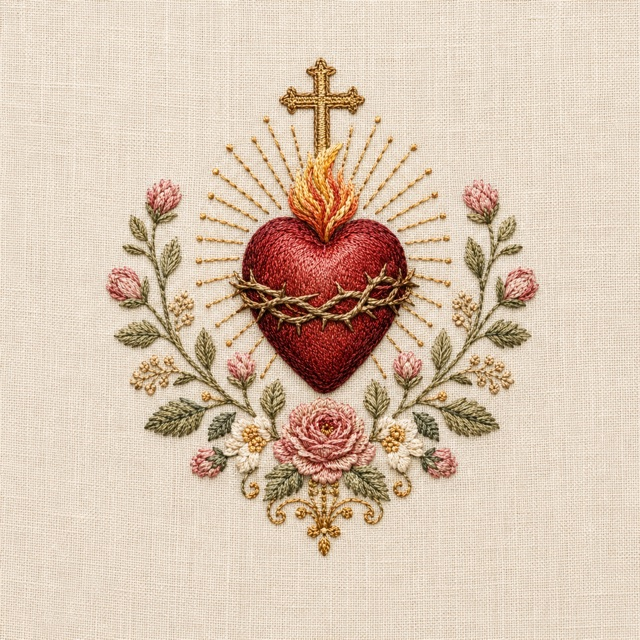
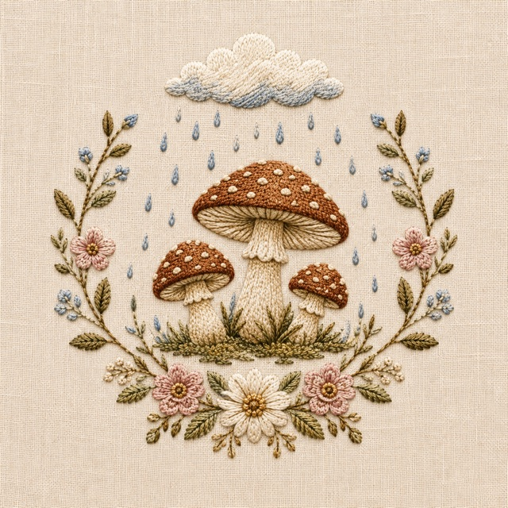
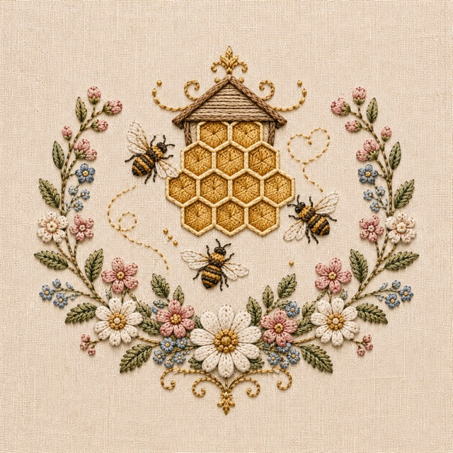
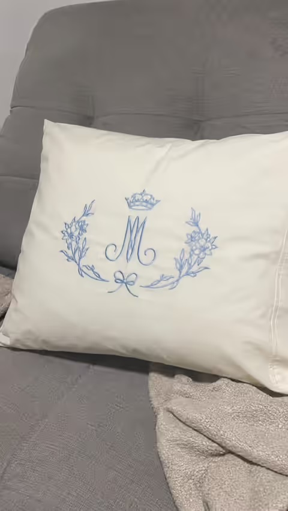

Coleção digital de bordado
100 Riscos para Pano de Prato Prontos para Imprimir, Transferir e Bordar à Mão
Uma coleção digital em PDF com riscos de bordado prontos para você imprimir, transferir e bordar à mão. Ideal para quem borda por hobby ou revende peças artesanais como panos de prato, jogos americanos, toalhas e quadros em bastidor.

Veja antes de decidir
Veja Por Dentro Como Funciona o Acervo Fio de Carinho
Em poucos minutos, entenda o que você recebe, como usar os riscos e por que esse material facilita tanto a criação de panos de prato bordados à mão.
Vídeo curto • Produto digital • Acesso imediato
Uma pequena amostra
Alguns dos Riscos Inclusos

Sagrado Coração de Jesus

Nossa Senhora Aparecida

Cogumelos na Chuva

Galo Carijó ao Amanhecer

Xícaras de Café

Colmeia e Abelhinhas

"Casa Feliz, Panela no Fogo"

Vasinho de Manjericão

Peixinhos no Aquário
Sua Ideia de Bordado Não Precisa Parar na Falta de um Risco Bonito
Muitas mulheres querem criar panos de prato lindos, mas perdem tempo procurando modelos na internet, encontram desenhos ruins ou não sabem desenhar. Entendemos a frustração de querer produzir e acabar esbarrando em:
Riscos difíceis de encontrar
Perder horas buscando sem achar o traço ideal para o seu projeto.
Desenhos ruins ou sem qualidade
Imagens embaçadas que dificultam a transferência para o tecido.
Pouca variedade para encomendas
Não ter um catálogo atrativo para oferecer às clientes.
Medo de errar na composição
A insegurança de desenhar do zero e acabar estragando o tecido.
Simples do início ao fim
Como Funciona
Baixe Seus Riscos
Receba o material completo no seu e-mail assim que a compra for confirmada, pronto para usar.
Transfira para o Tecido
Use papel carbono, decalque ou a técnica que preferir para passar o risco direto no pano.
Borde no Seu Ritmo
Siga os traços prontos e borde no seu ritmo, sem se preocupar em desenhar nada do zero.
Mais Inspiração, Mais Praticidade e Panos Cheios de Charme
Cada risco foi desenhado com traços limpos para garantir que o seu bordado fique delicado e sem complicação.
Borde com Mais Facilidade
Esqueça a dificuldade de tentar desenhar frutas, flores ou letras do zero. Você escolhe o modelo favorito, imprime do tamanho que precisar e transfere para o tecido.
Crie Peças com Charme
Faça presentes afetuosos e cheios de carinho. Os riscos são ideais para panos de prato, jogos americanos e quadros em bastidor para decorar a cozinha ou presentear.
Tenha Mais Modelos para Vender
Monte seu portfólio físico com panos e toalhas muito pedidos para chás de casa nova, aniversários ou datas especiais.
Também dá pra vender
Dá pra Transformar Bordado em Renda Extra
Peças bordadas à mão têm alta procura por serem exclusivas e cheias de capricho, o que abre espaço pra vender em feiras, redes sociais ou por encomenda.
Baixo Investimento
Um pano de prato liso custa poucos reais. Com um risco bonito e algumas horas de bordado, a peça ganha muito mais valor.
Preço de Mercado
Panos de prato, jogos americanos e toalhas bordadas costumam ser vendidos entre R$25 e R$60, dependendo do capricho e do tecido.
Onde Vender
Feiras de artesanato, Instagram, grupos de bairro e encomendas para chá de casa nova, batizados e datas especiais.
Com 100 riscos prontos no acervo, você nunca fica sem novidade pra oferecer às suas clientes, seja bordando por hobby ou vendendo peça por peça.
Quero Meus RiscosEsse Material é Ideal Para Você Que...
Borda por Hobby
e deseja modelos bonitos e prontos para relaxar bordando.
Quer Fazer Presentes
personalizados com afeto e carinho para o dia a dia.
Faz Encomendas
e precisa de variedade no portfólio para atender clientes.
É Iniciante
e deseja começar com um risco bonito, mesmo sem saber desenhar.
Cria Peças para Datas Especiais
precisando de modelos como frutas, flores e frases para presentear.
Para Quem NÃO é Esse Material?
Valorizamos a transparência. Para que você faça a escolha certa, saiba que este acervo:
Não é matriz para máquina: são riscos em PDF para serem bordados livremente à mão.
Não é um produto físico: você recebe o PDF por e-mail, sem envio pelos Correios.
Não ensina a bordar: o material não inclui aulas de pontos, é a coletânea dos modelos.
Não pode ser revendido: venda as peças que bordar à vontade, mas o PDF é de uso pessoal.
Presentes exclusivos
E o Plano Completo Ainda Vem com Bônus Exclusivos
Guia Rápido de Técnicas de Transferência
O passo a passo para transferir seus riscos em diversas cores e tipos de tecido, sem manchar.
Pack de Etiquetas para Presentes
Artes prontas para imprimir e usar como tags nas suas encomendas ou presentes com as peças bordadas.
Curadoria de Fornecedores em Conta
Uma lista com indicações de onde comprar linhas, tecidos e bastidores de qualidade sem gastar muito.
Oferta especial
Escolha Seu Plano
Plano Básico
Só os riscos, sem bônus
- 100 riscos em alta resolução, prontos para imprimir
- Arquivo em PDF, acesso imediato após a compra
- Bônus: guia rápido de técnicas de transferência
Plano Completo
Riscos + acesso vitalício + bônus
- 100 riscos em alta resolução, prontos para imprimir
- Arquivo em PDF, acesso imediato após a compra
- Riscos variados para pano de prato, jogo americano e quadros
- Acesso vitalício: material reenviado por e-mail sempre que precisar
- +3 bônus exclusivos: guia de transferência, etiquetas para presentes e curadoria de fornecedores
Espera, temos algo melhor pra você
Antes de levar só o Básico, que tal o Plano Completo com todos os bônus por um preço menor do que você pagaria no Básico sozinho?
Garantia de 7 Dias, Risco Zero para Você
Nossa maior alegria é que você ame cada um dos desenhos e crie peças lindas com eles. Por isso, oferecemos uma garantia completa. Acesse o material, veja os riscos e avalie a organização.
Se por qualquer motivo você sentir que o acervo não é para você, basta nos enviar um único e-mail dentro do prazo de 7 dias e devolveremos 100% do seu dinheiro.
Histórias reais
Quem já Recebeu
 Peça bordada
Peça bordada
 Peça bordada
Peça bordada
 Peça bordada
Peça bordada

Peça bordada Peça bordada
Peça bordada
Tire suas dúvidas
Perguntas Frequentes
Em que formato o material é entregue?
Você recebe um arquivo em PDF por e-mail, pronto para baixar e imprimir quantas vezes quiser.
Preciso de impressora especial?
Não. Qualquer impressora doméstica em papel comum já é suficiente para imprimir os riscos.
Funciona em qualquer tipo de tecido?
Sim. Os riscos podem ser transferidos para algodão, linho e outros tecidos comuns de bordado.
Não sei bordar, consigo usar mesmo assim?
Sim. Os riscos já vêm prontos, então você só precisa seguir os traços com os pontos que já conhece ou está aprendendo.
Recebo o material na hora?
Sim. O acesso é liberado automaticamente no seu e-mail assim que o pagamento é aprovado.
Comece hoje a bordar com carinho
100 riscos prontos para imprimir, transferir e bordar à mão, a partir de R$10.
Quero Meus Riscos